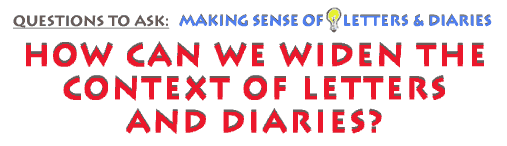

This is an archived copy of History Matters, provided by the Roy Rosenzweig Center for History and New Media. To explore this content in a new interface, visit Who Built America?.

|
|
 A final strategy remains in our reading of diaries and letters. This strategy seeks corroboration and context for personal texts by stepping back from them and asking broader questions of time and place. Sometimes this is difficult to do. It is easy to grow accustomed to living "inside" the world created by people’s letters and dairies, inside the events and relationships which you have worked to take as seriously as your own. But now the goal is the important historical one of understanding how the passage of time mattered to them and to us, and to explore how our understanding of their lives might be deepened by seeing them in a wider historical frame. Indeed, as Marilyn Motz observes of women diarists of the nineteenth-century who read widely and shared ideas, "Far from being provincial, these women used that most private form, the diary, to establish themselves as citizens of the world." First, ask in what ways the writers themselves seem most aware of a larger context and of time passing, not only in terms of days and weeks but also in larger spans. Do they characterize their own time as an era or a turning point in historical time? If so, how? If not, what might this suggest about their sense of their place in history? Certainly diarists during war time often reflect on momentous changes they anticipate will happen. Does the writer show an interest in possible future readers? Does she speculate about the future in any way that sheds light on her sense of being "from" a given time and yet having a grasp on change?* Along these same lines, you will want to corroborate whatever you can of writers’ assertions of fact, depending on how deeply your research takes you. If a correspondent mentions seeing President Wilson on a train in Baltimore, Maryland, on a certain day in October, 1917, it is important to see if you can find other sources which corroborate Wilson’s presence there on that day. Or, if a diarist makes a claim about urban violence in New York City in the summer of 1863, it is useful to consult other sources — official documents, newspapers, other observers — to give perspective to what the diarist says. Again, depending on how substantial you want to make your study, these sources can expand outward indefinitely — to such varied sources as census reports, government documents, photographs, maps, oral histories — and other diaries and letters. Two important things happen when you seek corroboration and context. You widen the angle of historical vision, creating not only a more complete picture of "what happened," but also deepening the interpretation of all similar happenings. And you get a sharper sense of how observant or reliable (or not) is your diarist or letter-writer, and thus a clearer idea of her as a historical observer and actor. As you do these things, of course, read the texts with specific reference to your knowledge of a larger or different context. Read "from the future," so to speak. Although you have spent time entering into people’s personal worlds in the past — understanding their language, concerns, relationships, and events — it is now important to re-assert your own time-bound perspective as a complementary but critical check on the view from the past. Emily Dickinson’s much-quoted remark that "a Letter always feels to me like immortality because it is the mind alone without the corporeal friend" wonderfully evokes a certain timeless quality of letters. But it is up to us to interpret letters and their writers as fully as we can in term of their own era, even if they did not. Do the diarists and letter-writers know about and respond to what you know were the far-reaching issues of their day? If your diarist is a non-southerner traveling through the South of the 1850s, for instance, does he mention slaves and slavery? If your letter-writers are well-to-do, urban women corresponding in 1920, do they mention the new women’s suffrage? If they live in St. Louis during the cholera epidemic of 1849, do they mention it? Ask "how" they talk about it, as well: curiously? empirically? dismissively? And if the writers are silent about such "big" events known to you, it is useful to ask why this might be, what it might mean, and how you can go on to deepen your own knowledge through further research. The object, of course, is not to condescend to them but to use your own particular historical context and skills to give further shape to theirs.*
Even one
letter or diary passage can tell us a great deal about a particular
time and place in the past, but only if we know what other evidence
to consult in order to make sense of its puzzling references and place
its ideas into larger contexts. The
letter:
|
|||

|
||||